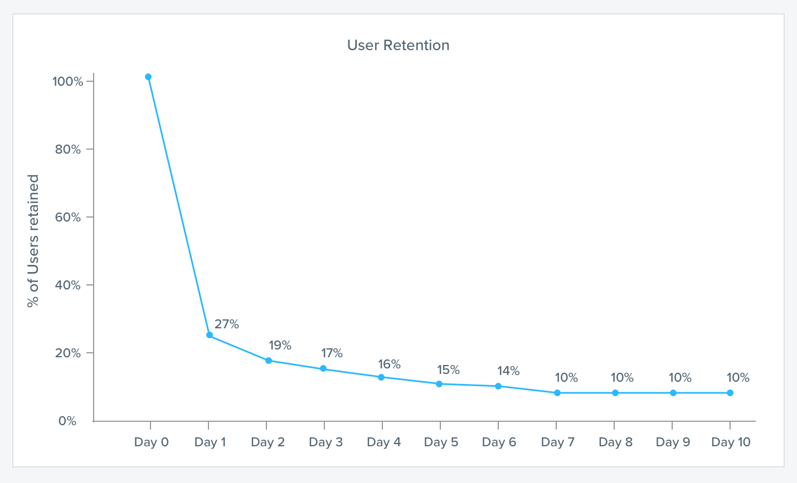
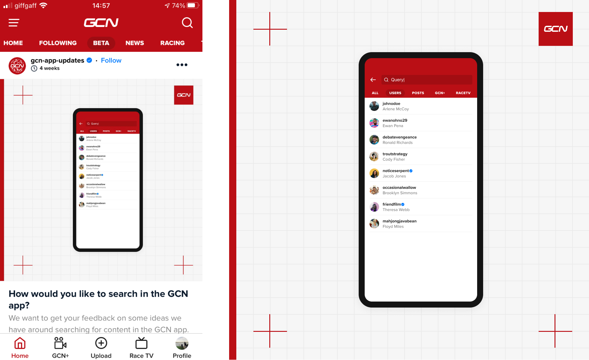

Growing the GCN app
ContextGlobal Cycling Network is the world’s largest online cycling channel, and the GCN app is for anyone interested in the world of cycling. The app has 2 core offerings, a live racing, on-demand films & documentary streaming service. The app is also a place to share and interact with a wide range of cycling content and other cycling enthusiasts.
Problem spaceThe GCN app social experience does not have product-market fit. Our users are not following each other, and we are not delivering a value proposition around following that encourages users to do it. Our users cannot find real-world friends, and cannot easily make new connections by finding people with similar interests.
Our hypothesis is that by improving the connectivity of the user base (by increasing the avg number of followers people have) will mean users see content that is more relevant to them. This will lead to a more personalised & valuable app experience and higher retention rates for new users.
ResearchBy analysing previous user interviews as well as feature requests & support tickets, we discovered that users were struggling to find other users and content in the app. Compared to other issues, a way to search content was the most reported issue in our feedback tracker. With the recent launch of our films and racing streaming service, a search feature was also a strong strategic move to improve the product.

I worked closely with product and engineering teams to agree on a high level flow for a potential structure for the search feature.
Testing prototypesI produced an initial prototype to use in moderated user testing with Figma Mirror to create a realistic native experience. Testing was focused on navigation and layout of search results to gather feedback on proposed information architecture.
As well as moderated user testing, we posted an unmoderated test link to our beta users to get additional insight and feedback on our prototype.
After analysing the results of our initial testing, we found that participants were struggling to find the specific result they were looking for amongst the range of results that were returned. Participants felt there should be a better way to narrow down and filter results more categorically. With this feedback in mind I updated the prototype to include result filtering.
Final desgins Impact & takeawaysOver the course of the quarter following the release of the initial search feature, the average number of followers for each active user in the GCN app increased by over 200%. We will continue to seek feedback on the feature via user interviews and monitor search logs to gain an understanding of how our users are using the feature